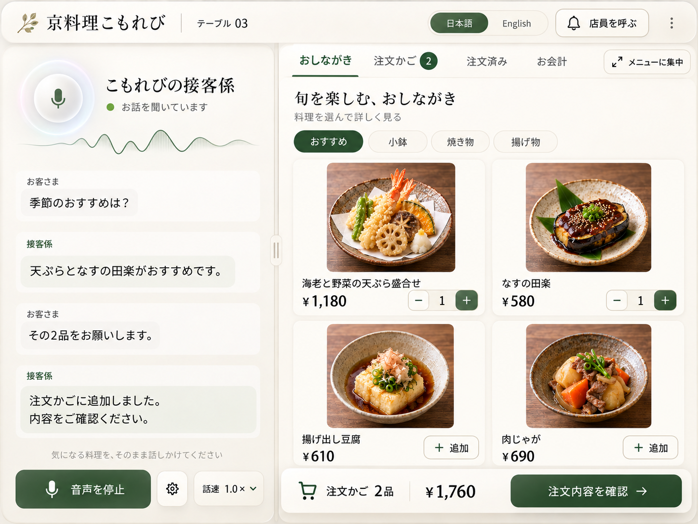
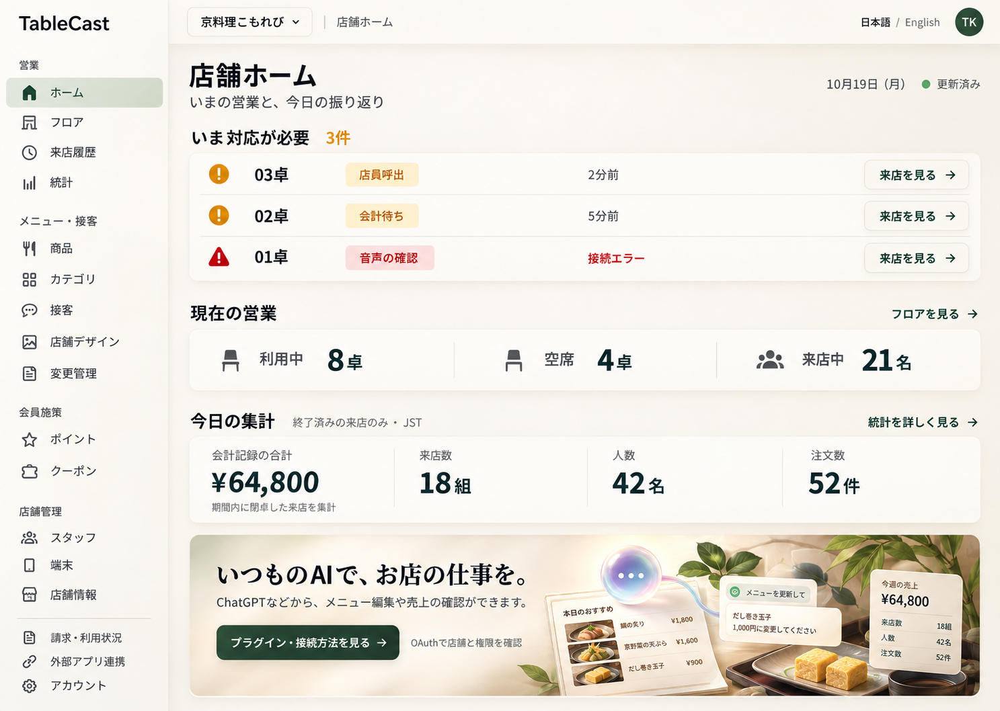
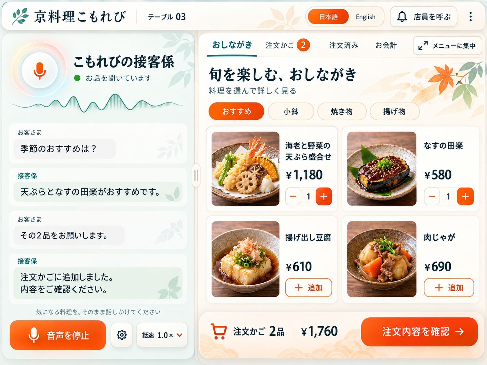
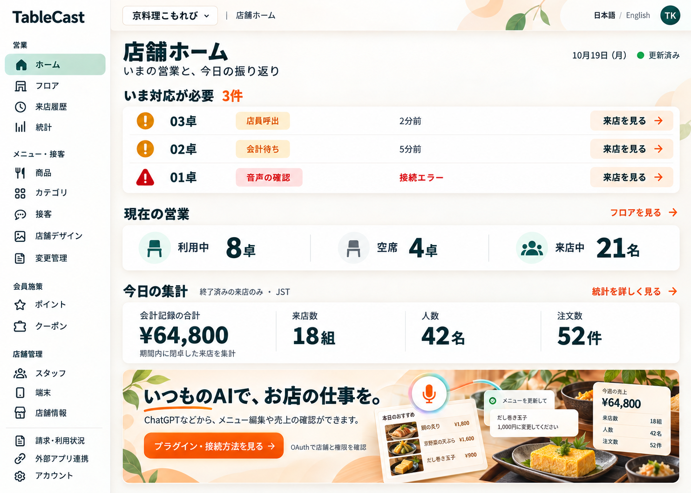
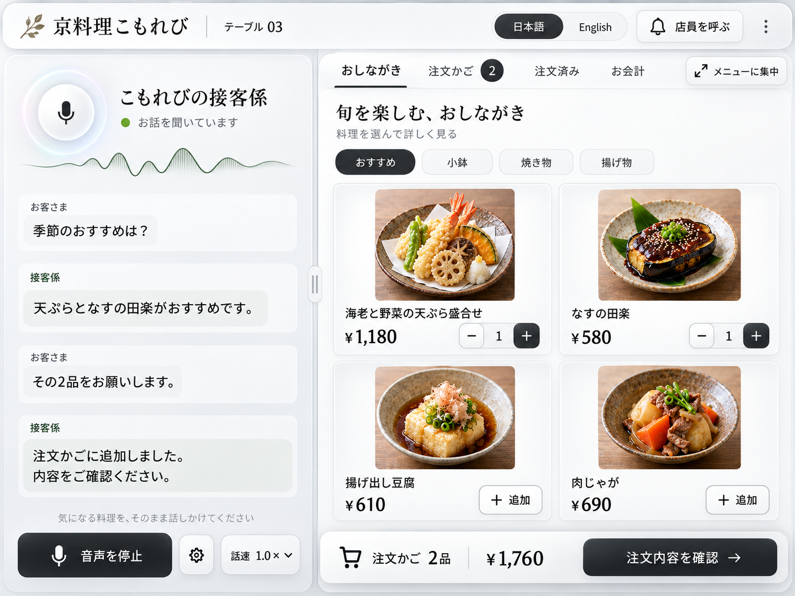
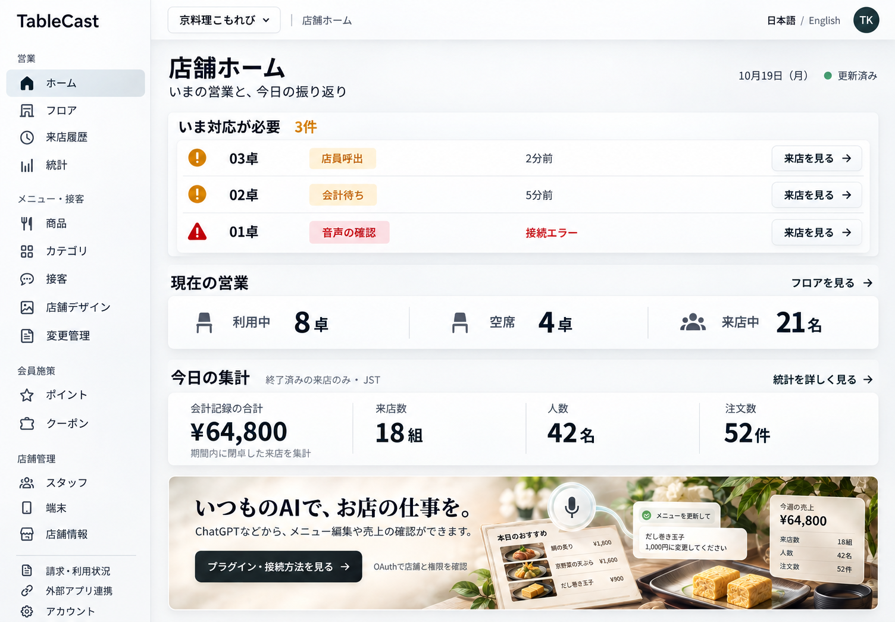

A
温かく洗練されたガラス感
温かな白と深い緑。料理と会話への親しみを、柔らかな陰影で包みます。


TABLECAST · CONCEPT STUDY · 2026.10.19
客向けと店舗向けを並べて比較。画像を押すと原寸で開きます。
料理・価格・営業状態を揃えた、画像生成によるコンセプトです。
温かな白と深い緑。料理と会話への親しみを、柔らかな陰影で包みます。


オレンジの操作と青緑の文字。選ぶ楽しさと、迷わない明快さを強めます。


明るい無彩色と精緻な境界。料理と情報を引き立てる、端正な透明感です。

